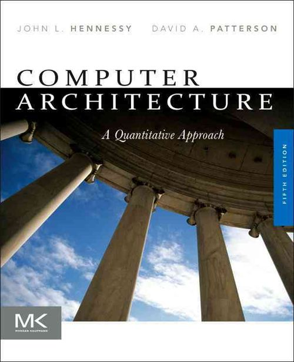
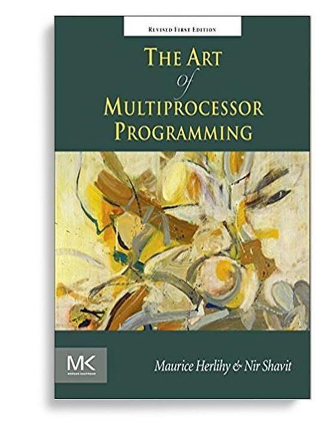

Easy Pieces #1: Concurrency


本讲概述
我们对操作系统已经有了模糊的认识：它是支持应用程序的系统软件；应用程序由代码和数据构成，使用
syscall等指令调用操作系统 API……在第一部分 (并发) 中介绍实现操作系统的基础知识：
- 操作系统首先是一个程序，是世界上最早的 “并发程序” 之一
- 如何编写并发程序 (操作系统课程的学习目标之一)
本讲内容
- 什么是并发？
- 为什么需要并发？
- (共享内存) 多处理器上的并发程序 (1)
并发 (Concurrency) 与并行 (Parallelism)
并发 (Concurrency)
Concurrent: existing, happening, or done at the same time.
In computer science, concurrency refers to the ability of different parts or units of a program, algorithm, or problem to be executed out-of-order or in partial order, without affecting the final outcome. (Wikipedia)
思考题：为什么在这门课 (先) 讲并发？
- 讲并发
- 操作系统是最早的并发程序之一
- 并发控制算法最早在操作系统中研究
- 先讲并发
- 好做实验 (L1: 多处理器 bare-metal 上的
malloc/free)- 警告：难度剧增
- 好做实验 (L1: 多处理器 bare-metal 上的
多任务操作系统中的并发
(假设系统中只有一个 CPU)
操作系统可以同时加载多个程序 (进程)
- 每个进程都有独立的地址空间；互相不会干扰
- 你编写的 C 程序，任何
*p都不能访问其他进程的内存 - 思考题：即便是拥有 root 权限的进程，也不能直接访问操作系统内核的内存，为什么？
- 你编写的 C 程序，任何
- 每隔一定时间，就切换到另一个进程执行 (看起来进程好像在同时运行)
多任务操作系统中的并发 (cont'd)
并发性的来源：进程会调用操作系统的 API
write(fd, buf, 1 TiB)(TiB 宏)write的实现是操作系统的一部分- x86-64 应用程序执行
syscall后就进入操作系统执行 (应用程序不可见)- 类似 “中断处理程序”
- 运行在处理器的高特权级；能访问硬件设备 (否则就不能写数据了)
- 但又不能一直霸占处理器运行 (否则系统就卡死了)
- x86-64 应用程序执行
- 因此必须允许
write到一半的时候，让另一个进程执行- 另一个进程调用
read(fd, buf, 512 MiB)读取同一个文件 - 操作系统代码并发了：操作系统 API 实现需要考虑并发
- 另一个进程调用
“操作系统是最早的并发程序之一”
典型的并发系统
并发 (Concurrent)：多个执行流可以不按照一个特定的顺序执行
并行 (Parallel)：允许多个执行流同时执行 (多个处理器)
| 处理器数量？ | 共享内存？ | 典型的并发系统 | 并发/并行 |
|---|---|---|---|
| 单处理器 | 共享内存 | OS 内核/多线程程序 | 并发不并行 |
| 多处理器 | 共享内存 | OS 内核/多线程程序/GPU Kernel | 并发、并行 |
| 多处理器 | 不共享内存 | 分布式系统 (消息通信) | 并发、并行 |
多处理器编程：入门
线程
线程：多个执行流并发/并行执行，并且它们共享内存
- 两个执行流共享代码和所有全局变量 (数据、堆区)
- 线程之间指令的执行顺序是不确定 (non-deterministic) 的
int x = 0, y = 0; // defaults to 0
void thread_1() {
[1] x = 1;
[2] printf("y = %d\n", y);
}
void thread_2() {
[3] y = 1;
[4] printf("x = %d\n", x);
}- 1 → 2 → 3 → 4 (y = 0, x = 1)
- 1 → 3 → 2 → 4 (y = 1, x = 1)
- 1 → 3 → 4 → 2 (x = 1, y = 1)
- ...
线程：什么该共享、什么不共享？
extern int x;
int foo() {
int volatile t = x;
t += 1;
x = t;
}0000000000001140 <foo>:
1140: 8b 05 ce 2e 00 00 mov 0x2ece(%rip),%eax # 4014 <x>
1146: 89 44 24 fc mov %eax,-0x4(%rsp)
114a: 8b 44 24 fc mov -0x4(%rsp),%eax
114e: 83 c0 01 add $0x1,%eax
1151: 89 44 24 fc mov %eax,-0x4(%rsp)
1155: 8b 44 24 fc mov -0x4(%rsp),%eax
1159: 89 05 b5 2e 00 00 mov %eax,0x2eb5(%rip) # 4014 <x>
115f: c3 retq 考虑如果有两个执行流同时调用 foo，哪些资源是共享的？
foo的代码 (1140--115f)- 寄存器:
rip,rsp,rax t:-0x4(%rsp),x:0x2eb5(%rip)
POSIX Threads
POSIX 为我们提供了线程库 (pthreads)
- 使用
pthread_create创建并运行线程 - 使用
pthread_join等待某个线程结束 man 7 pthreads
无论系统是单处理器/多处理器，都得到若干共享了当前进程地址空间的线程
- 共享代码：所有线程的代码都来自当前进程的代码
- 共享数据：全局数据/堆区可以自由引用
- 独立堆栈：每个线程有独立的堆栈
threads.h: Simplified Thread APIs
操作系统课封装了线程 API (threads.h)
create(fn)- 创建并运行一个线程，该线程立即开始执行函数
fn - 函数原型
void fn(int tid) { ... } tid是从 1 开始编号
- 创建并运行一个线程，该线程立即开始执行函数
join(fn)- 等待所有线程执行结束
- 执行函数
fn - 只能 join 一次
threads.h 实现：数据结构
struct thread {
int id; // 线程号
pthread_t thread; // pthread 线程
void (*entry)(int); // 入口地址
struct thread *next; // 链表
};
struct thread *threads; // 链表头
void (*join_fn)(); // callbackpthread_t: POSIX thread API 中的线程号
threads.h 实现：线程创建
static inline void *entry_all(void *arg) {
struct thread *thread = (struct thread *)arg;
thread->entry(thread->id);
return NULL;
}
static inline void create(void *fn) {
struct thread *cur = (struct thread *)malloc(sizeof(struct thread));
assert(cur);
cur->id = threads ? threads->id + 1 : 1;
cur->next = threads;
cur->entry = (void (*)(int))fn;
threads = cur;
pthread_create(&cur->thread, NULL, entry_all, cur);
}threads.h 实现：线程 Join
static inline void join(void (*fn)()) {
join_fn = fn;
}
__attribute__((destructor)) static void join_all() {
for (struct thread *next; threads; threads = next) {
pthread_join(threads->thread, NULL);
next = threads->next;
free(threads);
}
join_fn ? join_fn() : (void)0;
}多处理器 & 多线程：入门！
恭喜你，你已经可以玩起多线程编程啦！
#include <threads.h>
void a() { while (1) { printf("a"); } }
void b() { while (1) { printf("b"); } }
int main() {
setbuf(stdout, NULL); // ???
create(a);
create(b);
}更多的例子
- 如何相信真的启动了多个线程？ (hello-mt.c)
- 如何知道每个线程的堆栈范围和大小？ (stack-probe.c)
- 使用
pmap可以查看到 8192 KiB 的内存映射区域和 4 KiB (一页) 的 guard - 每个线程都要分配 8 MiB 堆栈，为什么 1,000 个线程没有耗尽内存？
- 使用
共享内存带来的麻烦……
线程共享代码、数据，拥有独立堆栈
int x;
void thread_func() {
int y; // 除非指针逃逸，其他线程不可见
x++; // 其他线程直接可见
}多处理器系统中线程的代码可能同时执行
- 两个线程同时执行
x++，结果会是什么呢？
多处理器编程：放弃 (1) 原子性
多处理器编程的困难：共享资源
并发/并行执行的线程可能对资源 (内存) 进行 “争抢”
一个和尚挑水喝，两个和尚抬水喝，三个和尚没水喝
- 随着线程数量的增加，并发控制的难度越来越大
如不进行并发控制，结果可能出乎意料
例子: write 的实现
ssize_t write(int fd, const char *buf, size_t size) {
struct file *file = get_file(fd);
...
write_to_disk(buf, file->offset, size);
file->offset += size;
...
}并发执行 write 会发生什么？
例子：山寨多线程支付宝
int pay(int money) {
if (deposit >= money) {
deposit -= money;
return SUCCESS;
} else {
return FAIL;
}
}并发执行 pay(100) 会发生什么 (balance == 100)？
- 如果是
deposit是unsigned，会发生更严重的后果——账户里会多出用不完的钱！
- 为了正确实现 pay，我们需要原子性 (atomicity)
- 一段代码不允许与其他代码并发
- (历史) 1960s，大家争先在共享内存上实现原子性 (互斥)
- 但几乎所有的 solution 都是错的，直到 Dekker's Algorithm，只能保证两个线程的互斥
Look Deeper Inside...
int pay(int money) {
if (deposit >= money) {
deposit -= money;
return SUCCESS;
} else {
return FAIL;
}
}中的 deposit -= money; 在硬件上的实际实现：
int tmp = deposit;
// 可能与其他处理器并发
tmp -= money;
// 可能与其他处理器并发
deposit = tmp;另一个例子：求和
分两个线程，计算 (共计 个 )
#define n 100000000
long sum = 0;
void do_sum() { for (int i = 0; i < n; i++) sum++; }
void print() { printf("sum = %ld\n", sum); }
int main() {
create(do_sum);
create(do_sum);
join(print);
}结果
- 113863902
放弃的理由：原子性的丧失
指令序列可以在任意时刻被中断，然后操作系统切换到其他线程执行
- 即便是最简单的
x++，也不能保证原子性 - 不用谈更大的代码片段了 (例如
pay)
===Thread 1=== ===Thread 2===
movl (x), %eax . // 1st x++; x == 0
addl $1, %eax .
. .
. // interrupt & context switch
. .
. movl (x), %eax // 2nd x++; x == 0
. addl $1, %eax
. mov %eax, (x) // 2nd x++; x == 1
. .
. // interrupt & context switch
. .
mov %eax, (x) . // 1st x++; x == 1有没有感到后怕？
单线程程序代码没有原子性的保证
void thread1() { while (1) { printf("a"); } }
void thread2() { while (1) { printf("b"); } }printf 并发还对么？
PRINTF(3) ATTRIBUTES
For an explanation of the terms used in this section, see attributes(7).
┌────────────────────────┬───────────────┬────────────────┐
│Interface │ Attribute │ Value │
├────────────────────────┼───────────────┼────────────────┤
│printf(), fprintf(), │ Thread safety │ MT-Safe locale │
│sprintf(), snprintf(), │ │ │
│vprintf(), vfprintf(), │ │ │
│vsprintf(), vsnprintf() │ │ │
└────────────────────────┴───────────────┴────────────────┘多处理器编程：放弃 (2) 顺序
更多的实验：求和
分两个线程，计算 (共计 个 )
#define n 100000000
long sum = 0;
void do_sum() { for (int i = 0; i < n; i++) sum++; }
void print() { printf("sum = %ld\n", sum); }
int main() {
create(do_sum);
create(do_sum);
join(print);
}结果： 
-O0: 113863902-O1: 100000000-O2: 200000000
放弃的理由：顺序的丧失
编译器干了什么好事？
允许源代码中 “内存访问” 指令不再按顺序甚至不再出现
- 编译器假设是优化对象是单线程程序
- 思考题：为什么？
- 假设程序是读 (
R) 和写 (W) 的序列；编译器：- 在值能被确定的前提下，
R(x)可能被删除 - 在未来
x一定被覆盖的前提下，W(x)可能被删除 x,y的读写可以交换顺序
- 在值能被确定的前提下，
for (int i = 0; i < n; i++) sum++;可以翻译成
- (
-O1)tmp = R(sum); for (int i = 0; i < n; i++) ; tmp += n; W(sum, tmp); - (
-O2)tmp = R(sum); tmp += n; W(sum, tmp);
多处理器编程：放弃 (3) 可见性
实验：之前的一小段代码
int x = 0, y = 0;
void thread_1() {
[1] x = 1;
[2] printf("y = %d\n", y);
}
void thread_2() {
[3] y = 1;
[4] printf("x = %d\n", x);
}实验结果 (4 x Xeon X7460, 24-cores)
| 打印的 x | 打印的 y | 概率 | 可能的调度 |
|---|---|---|---|
| 0 | 0 | 0.2% | ？？？ |
| 0 | 1 | 82.3% | 3 → 4 → 1 → 2 |
| 1 | 0 | 17.5% | 1 → 2 → 3 → 4 |
| 1 | 1 | 0.0% | 1 → 3 → 2 → 4 |
分析
x = 0, y = 1和x = 1, y = 0- 可以接受
- 没有观察到
x = 1, y = 1- 可以接受，指令的执行就几个 nanoseconds，在
[1] [2]之间插入其他指令的可能性很低
- 可以接受，指令的执行就几个 nanoseconds，在
- 观察到
x = 0, y = 0- 难以接受：任何 [1], [2], [3], [4] 的排列都不可能得到
放弃的理由：可见性的丧失
为了使 CPU 运行得更快，CPU 可以不按顺序执行指令！
movl $1, (x) # x = 1, cache miss
# 如果等这条指令执行完，会浪费大量时间
movl (y), %eax # 因此只要 x, y 不是同一个变量，CPU 会立即执行这条指令
# (此时 y = 0)
...
现代处理器 (动态数据流分析)：
- 如果两条指令没有数据依赖关系，就让它们并行执行好了！
- 乱序执行 (out-of-order)
- 多处理器上执行的结果可以不等价于指令按照某个顺序执行的结果
- Further reading
多处理器编程：从入门到放弃
代码的执行比我们想象的复杂
在现代计算机系统上，即便是一个简单的 x = 1 也会经历：
- C代码
- 编译器优化 → 顺序的丧失
- 二进制文件
- 处理器执行
- 中断/并行 → 原子性的丧失
- 乱序执行 → 可见性的丧失
共享内存并发编程真正需要面对的难题：
- 内存访问不保证按代码书写的顺序发生 (order)
- 代码的原子性随时被破坏 (atomicity)
- 执行过的指令可能在多处理器间不可见 (visibility)
- 本节课讲解的都是最小的例子；复杂的例子……
保证顺序
控制编译器行为、阻止编译优化
void delay() {
for (volatile // !!!
int i = 0; i < DELAY_COUNT; i++) ;
}保证内存访问 (指令) 的顺序
extern int x;
#define barrier() asm volatile ("":::"memory")
void foo() {
x++;
barrier(); // ============================
x++; // 阻止 x 的访问被合并
y++; // y 的访问不能被移到 barrier 之前
}(这部分内容应该出现在《计算机系统基础》)
保证原子性
本学期的重要主题：互斥 (mutual exclusion)
效果等效于：
stop_the_world(); ... // critical section, 临界区 resume_the_world();- 执行
stop_the_world()之后，整个系统中所有的其他线程都暂停 - 执行
resume_the_world()后，系统中其他线程才恢复
- 执行
这样就可以保证我们安静地完成
pay()或者sum++了
保证可见性
本学期基本不涉及
- 会介绍一个简化但够用的模型
- 简化自 C11 Memory Model
- 保证可见性：指令集来帮忙
- 顺序指令
- fences (lfence, sfence, mfence, ...)
- 原子指令
- x86-family: lock prefix (
lock xchg, ...) - riscv/mips: load-reservation/store-conditional (mip)
- x86-family: lock prefix (
- 顺序指令
Take-aways and Wrap-up
多处理器编程：从入门到放弃
不要自作主张写 “聪明” 的并发程序
- W. Xiong, et al. Ad hoc synchronization considered harmful. In Proceedings of OSDI, 2010.
老老实实使用久经考验的 API，写出读得懂、说明得了正确性的代码
- 这是一门 system 课程，因此这门课不讲复杂的并发

还不放弃？
- 并发算法是非常有趣 (很难) 的研究问题！
- 《并发算法与理论》 (秋季学期开课)
- 主讲：梁红瑾；SIGPLAN Distinguished Paper Award Winner (PLDI'19)
- 使用右边这本世界上最好的并发教科书
- Gödel Prize Winner